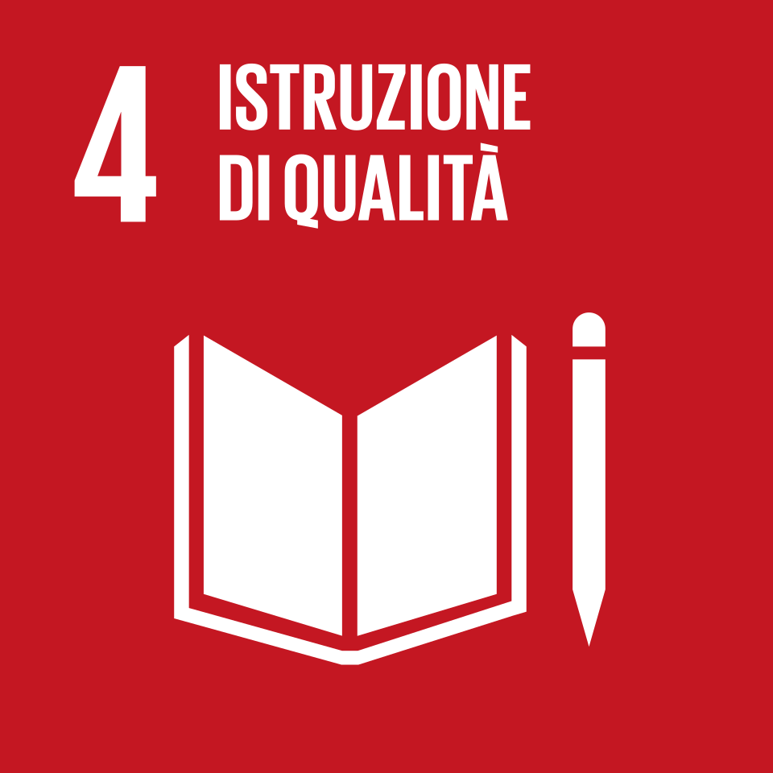

4
Assicurare un'istruzione di qualità, equa ed inclusiva, e promuovere opportunità di apprendimento per tutti
L'Obiettivo 7 dell'Agenda 2030 delle Nazioni Unite si propone di garantire a tutti
l'accesso a un'energia pulita, affidabile, sostenibile e moderna a prezzi accessibili.
L'energia è considerata uno dei motori fondamentali dello sviluppo sostenibile:
alimenta ospedali, scuole e industrie, riduce la povertà e rappresenta la base
indispensabile per affrontare la crisi climatica.
Nonostante i progressi degli ultimi decenni, ancora oggi circa 675 milioni di persone
nel mondo non hanno accesso all'elettricità. La dipendenza dai combustibili fossili
continua a dominare il mix energetico globale, rendendo urgente una transizione
accelerata verso le energie rinnovabili — solare, eolica e idroelettrica — per
garantire un futuro sostenibile per il pianeta.
Nonostante i progressi degli ultimi decenni, ancora oggi milioni di bambini e giovani nel mondo non hanno accesso
a un'istruzione di qualità. La pandemia da COVID-19 ha aggravato ulteriormente la situazione,
causando la più grande interruzione dei sistemi educativi della storia: oltre 1,6 miliardi di studenti
sono stati colpiti dalla chiusura delle scuole.

L'SDG 4 si suddivide in 10 target da raggiungere entro il 2030
Garantire che tutti i bambini completino un ciclo di istruzione primaria e secondaria gratuita, equa e di qualità.
Garantire a tutti i bambini l'accesso a uno sviluppo infantile precoce di qualità e alla scuola dell'infanzia.
Garantire un accesso equo a istruzione tecnica, professionale e universitaria per donne, uomini e persone vulnerabili.
Aumentare il numero di giovani e adulti con competenze tecniche e professionali adeguate, incluse quelle digitali.
Eliminare le disparità di genere nell'istruzione e garantire pari accesso a tutti i livelli per le persone vulnerabili.
Garantire che tutti i giovani e la maggioranza degli adulti acquisiscano alfabetizzazione e competenze matematiche di base.
Garantire che tutti gli studenti acquisiscano le conoscenze necessarie per promuovere lo sviluppo sostenibile e i diritti umani.
Costruire e migliorare le strutture scolastiche in modo che siano sicure, inclusive e accessibili a tutti.
Espandere il numero di borse di studio disponibili per i paesi in via di sviluppo per l'istruzione superiore.
Aumentare considerevolmente entro il 2030 la presenza di insegnanti qualificati negli stati in via di sviluppo